Ontmoet task force 141

Task force 141, ook wel “The One-Four-One” genoemd, is een speciale ‘Task force’ gemand door ‘Agents’ met Special Ops experience en hebben allemaal verschillende nationaliteiten. Task force 141 speelt de hoofdrol van Call of Duty: Modern Warfare 2, waar deze Task force te taak heeft iemand genaamd Valdimir Makarov uit te schakelen, omdat hij de reden is dat Rusland de Verenigde Staten hebben aangevallen.
Het verhaal van Modern Warfare II
In juli 2022 werkte Task Force 141 onder het bevel van generaal Shepherd en voerde hij aanvallen uit op door Rusland gesteunde Iraanse troepen.
Wanneer een Amerikaanse raketaanval de Iraanse generaal Ghorbrani vermoordt werd tijdens een wapendeal in Al Mazrah, neemt zijn onderbevelhebber Quds Force majoor Hassan Zyani,
de mantel van het leiderschap op zich en raakt betrokken van terroristische activiteiten gedurende meerdere maanden en zoekt wraak op de Verenigde Staten voor de dood van Ghorbrani.
Zijn activiteiten trekken de aandacht van Shepherd en CIA-chef Kate Laswell, die opdracht geeft tot de inzet van MARSOC-mariniers onder leiding van luitenant Simon aka "Ghost" Riley
en sergeant John aka "Soap" om Hassan in Al Mazrah te arresteren.
Hassan is het gebied al ontvlucht, terwijl Ghost en Soap ontdekken dat hij in het bezit was van een Amerikaanse ballistische raket.
Om hun achtervolging op Hassan voort te zetten, achtervolgen Laswell, kapitein John Price en sergeant Kyle "Gaz" ze Garrick één van Hassan's koeriers in Amsterdam,
waarbij ze vernemen dat Hassan een bondgenootschap heeft gesloten met het Las Almes-kartel en wordt opgevangen in Mexico.
Na een mislukte poging om Hassan te arresteren aan de Amerikaans-Mexicaanse grens,
nemen de Mexicaanse Special Forces kolonel Alejandro Vargas en zijn onderbevelhebber sergeant-majoor Rodolfo "Rudy" Parra deel aan een gezamelijke operatie met
Ghost, Soap en Shadow Company om Hassan gevangen te nemen. Hoewel ze succesvol zijn, worden ze gedwongen hem vrij te laten om politieke gevolgen te voorkomen terwijl ze een volgapparaat op zijn mobiele telefoon plaatsen.
Hassan's getraceerde telefoontje leidt Price, Laswell en Gaz naar Cape Vilan, Spanje om een visserskwekerij van Las Almas binnen te vallen,
waar ze ontdekken dat Las Almas in het bezit was van in Rusland gemaakte gps-apparaten om te gebruiken voor de gestolen raketten.
Laswell wordt gevangengenomen door Al-Qatala-troepen, wat Price en Gaz ertoe aanzet haar in Urzikstan te redden, met de hulp van hun oude bondgenoten "Nikolai" en Farah Karim.
Ondertussen infiltreren Vargas en Soap een bijeenkomst in Las Almas om hun leider, El Sin Nombre, te identificeren, die bleek de voormalige teamgenoot van Vargas, Valeria Garza, te zijn.
Valeria sluit een deal met Shadow Company door de locatie van de raketten te onthullen.
Bij een inval onder leiding van Ghost, de commandant van de schaduwcompagnie Phillip Graves, Soap en Vargas valt de gezamenlijke taskforce een verlaten olieboortoren en vrachttanker aan om een raketlancering te voorkomen.
Ondanks de succesvolle missie verraden Graves en Shadow Company Vargas en Task Force 141 door de operatiebasis van de eerste over te nemen en zijn mannen vast te houden op bevel van Shepherd.
Graves neemt Vargas gevangen en zet hem gevangen, terwijl Ghost en Soap in veiligheid vluchten. Met de hulp van Parra, Laswell, Price en Gaz lanceren Ghost en Soap een ontsnapping uit de gevangenis om Vargas en zijn soldaten te bevrijden.
Tijdens de extractie onthult Laswell dat Shepherd en Graves in augustus verantwoordelijk waren voor een mislukte en illegale transportmissie,
die bedoeld was om ballistische raketten naar Amerikaanse bondgenoten in het Midden-Oosten en de URA tegen de Russen te vervoeren,
maar in een hinderlaag werden gelokt door Russische PMC's die leidden naar de drie ballistische raketten die in de eerste plaats werden gestolen en verdoezelden het.
Price confronteert Shepherd via een videoverbinding met de onthullingen en belooft hem te achtervolgen wanneer Hassan en Graves zijn uitgeschakeld.
Task Force 141 en hun Mexicaanse Special Forces-bondgenoten slagen erin Graves te doden en leren van Valeria dat Hassan in Chicago is,
met de bedoeling de resterende raket op Washington, DC af te vuren. Het team verijdelt het complot en doodt Hassan.
In de nasleep van de missie is Shepherd ondergedoken, terwijl Laswell Task Force 141 informeert over de leider van Rissische ultranationalisten die verantwoordelijk zijn voor de mislukte operatie van
Shepherd, die Price identificeert als Vladimir Makarov.
Ondertussen bereidt een Russische terroristische cel zich voor om een vliegtuig te kapen nadat ze een sms van Makarov hebben ontvangen waarin staat dat ze tijdens hun missie geen Russisch mogen spreken.
Multiplayer
Multiplayer is terug! Er zijn veel nieuwe modes zoals DMZ, je zal missies moeten doen en overleven om alles te extracten, of je verliest alles! Ook kan je genieten van de standaard ervaring met alle mappen / modes die je al kent.
Nieuwe features
Er zijn veel nieuwe features toegevoegd om het spel vers en uniek te houden, hier zijn een paar nieuwe features:
- Je kan nu zwemmen en lopen in water. 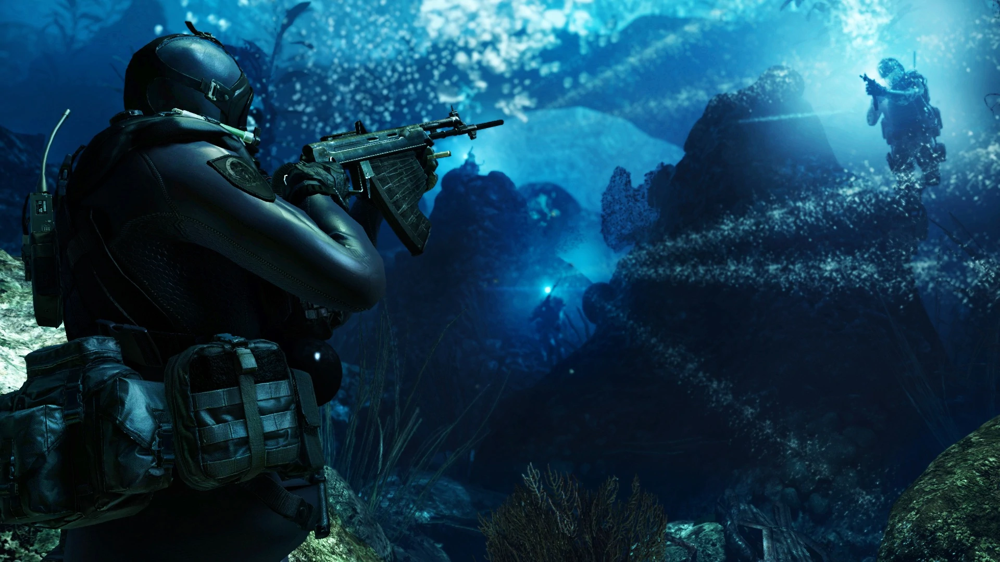
- Nieuwe equipment. 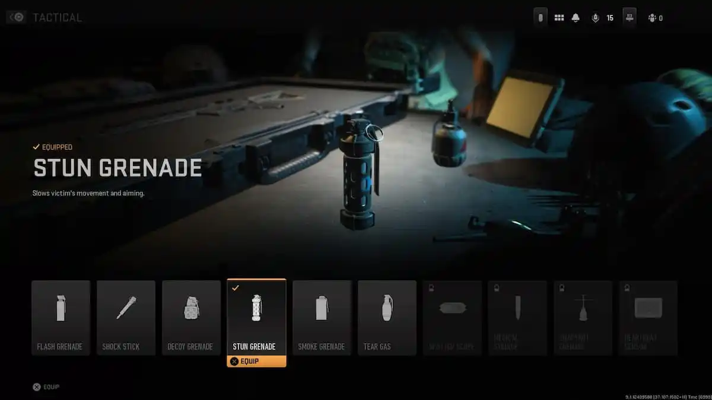 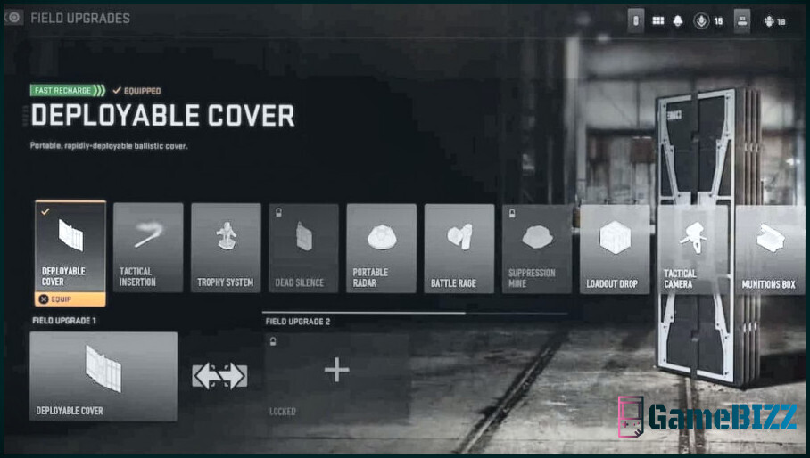
- Nieuwe perk systeem. 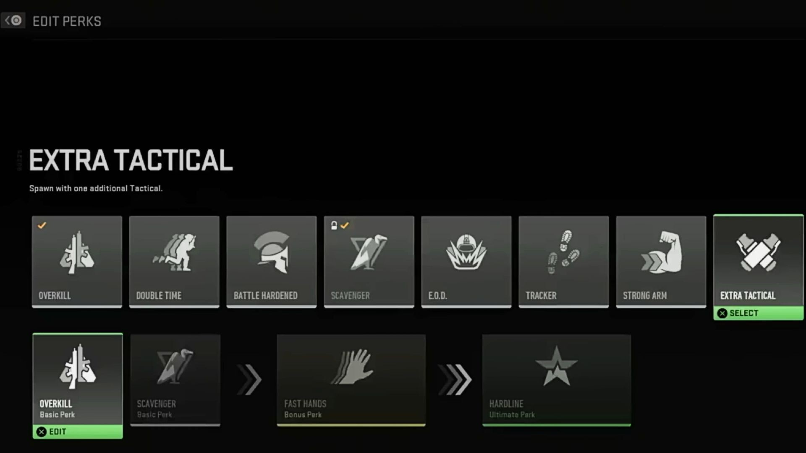
Maps
Modern Warfare II heeft twee soorten mappen: Core Maps en Battle maps. Deze mappen zijn gegroept in een van de drie categorieën: Al Mazrah, Las Almas en De rest van de wereld.
Al Mazrah:
Mappen in deze categorie zijn gebaseerd op locaties in Al Mazrah, een grootstedelijk gebied en de buitenwijken rond de Republiek Adal, die dienen als de belangerijkste regio voor Call of Duty: Warzone 2.0. Verschillende Core- en Battle-maps zijn gebaseerd op locaties uit deze regio, waardoor Multiplayer een geweldige modus is om bekend te raken met de aandachtpunten van de map.Las Almas:
Las Almas, een belangrijk interessegebied in de Modern Warfare II-campagne, is een regio in Midden-Amerika waar verschillende Core- en Battle-maps te vinden zijn.Rest van de Wereld:
De laatste categorie kaarten speelt zich af in gebieden buiten Al Mazrah en Las Almas om een glimp op te vangen van wat er in andere delen van de wereld gebeurt.
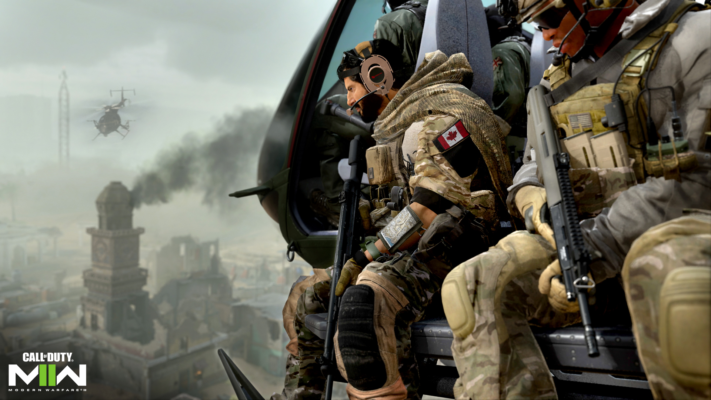
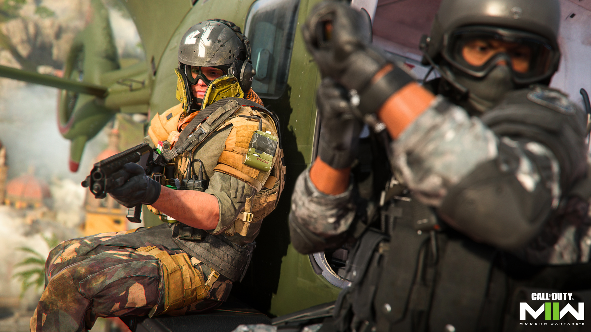
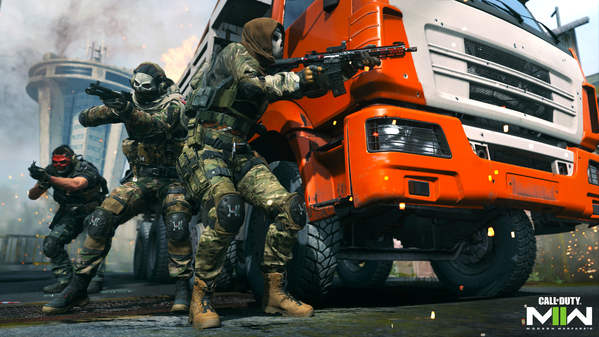
Core Maps ondersteunt traditioneel 6v6-spel, terwijl Battle Maps tot 32v32 ondersteunt.
Gamemodes
Modern Warfare II Multiplayer biedt bij de lancering twee verschillende gamemodes, gebaseerd op het type kaart waarop ze worden gespeeld: Core Map-modes en Battle Map-modes. Dit zijn alle gamemodes:
Free-for-All:
Elimineer iedereen. De eerste speler die 30 eliminaties bereikt, beëindigt de wedstrijd, waarbij de drie best presterende spelers de overwinning claimen.Team Deathmatch:
Call of Duty® in zijn puurste vorm. Gebruik teamwerk om vijandige spelers uit te schakelen en de scorelimiet te bereiken. Het eerste team dat 75 eliminaties behaalt, wint de wedstrijd.
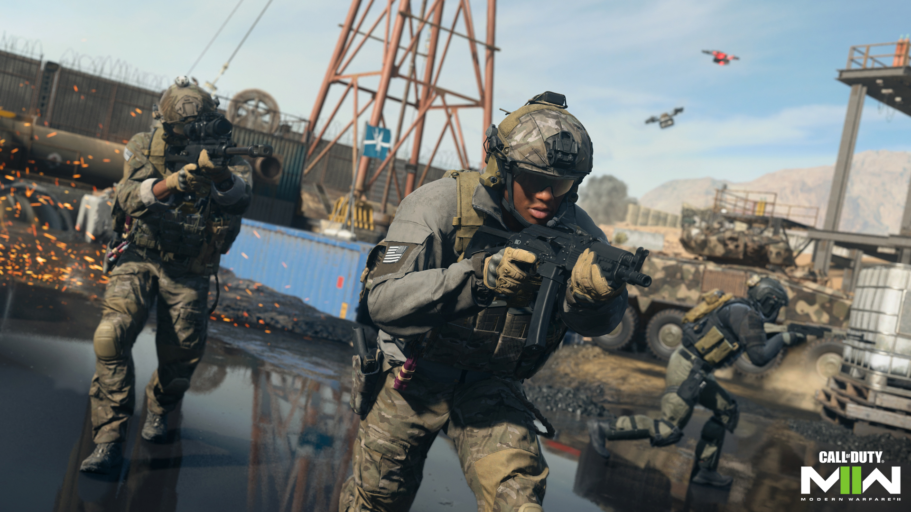
Domination:
Strijd om controle over drie zones die zijn gemarkeerd met vlaggen: A, B en C. Veroverde zones verzamelen punten in de loop van één ronde. Het team dat als eerste 200 punten behaalt, wint de wedstrijd.
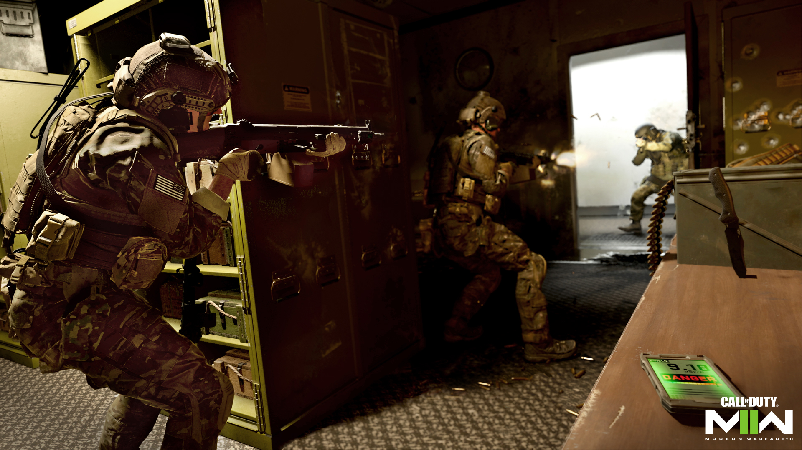
Hardpoint:
Verover het Hardpoint en houd het tegen aanvallen. De Hardpoint-locatie roteert elke minuut, waarbij de positie van het volgende Hardpoint wordt aangegeven in de laatste 10 seconden van de vorige zone. Het eerste team dat 250 punten verdient, wint de wedstrijd.
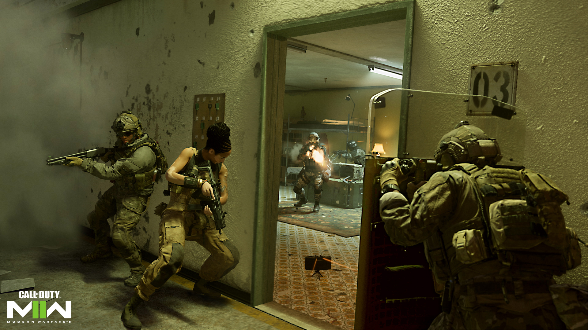
Headquarters:
Werk om het hoofdkwartier te veroveren, graaf het in en verdedig het. Respawns zijn uitgeschakeld voor het team dat het hoofdkwartier bezit. Zodra het hoofdkantoor offline is gehaald, wordt een nieuwe zone aangewezen voor de volgende. Het eerste team dat 200 punten verdient, wint de wedstrijd.
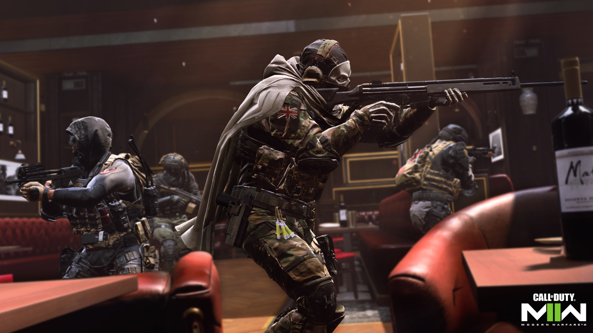
Control:
Val om beurten aan en verdedig twee doelen. Elk team deelt een pool van 30 levens. Als het aanvallende team met succes één doel uitschakelt, krijgen ze meer tijd om het tweede doel te voltooien. Het verdedigende team kan de ronde winnen door de tijd te laten verstrijken voordat de doelen worden ingenomen. Elk team kan bovendien winnen door alle 30 levens van het andere team uit te schakelen. Het eerste team dat drie rondes wint, wint de wedstrijd.Prisoner Rescue:
Vind de gijzelaars en haal ze er levend uit of voorkom koste wat het kost dat ze worden geëxtraheerd. Geen respawns. Teamherlevingen zijn ingeschakeld. De aanvallers moeten twee gijzelaars vinden en ze uitvoeren of beschermen bij het extractiepunt - elke gijzelaar is 100 punten waard. Verdedigers moeten hun extractie ten koste van alles voorkomen en ze bij elkaar houden in hun spawn-gebied totdat de timer van de ronde afloopt. Elke gijzelaar die niet door de aanvallers wordt gedragen of gevangengenomen, is 50 punten waard. Het eerste team dat 500 punten verdient, wint de wedstrijd.
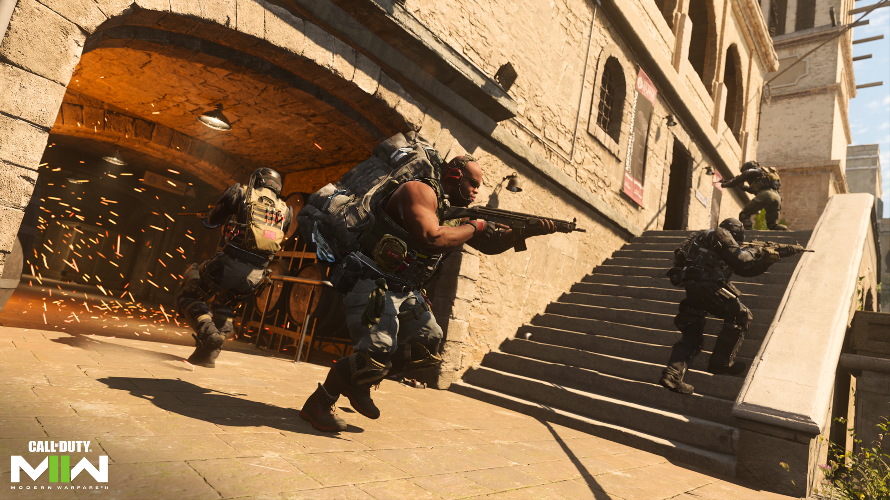
Knock Out:
Beide teams vechten om een zak met geld in het midden van de map. Geen respawns. Teamherlevingen zijn ingeschakeld. Ren over het geld om het te pakken. Het team dat aan het einde van de ronde de zak vasthoudt of het hele vijandelijke team uitschakelt, wint de ronde. Het eerste team dat vijf rondes wint, wint de wedstrijd.
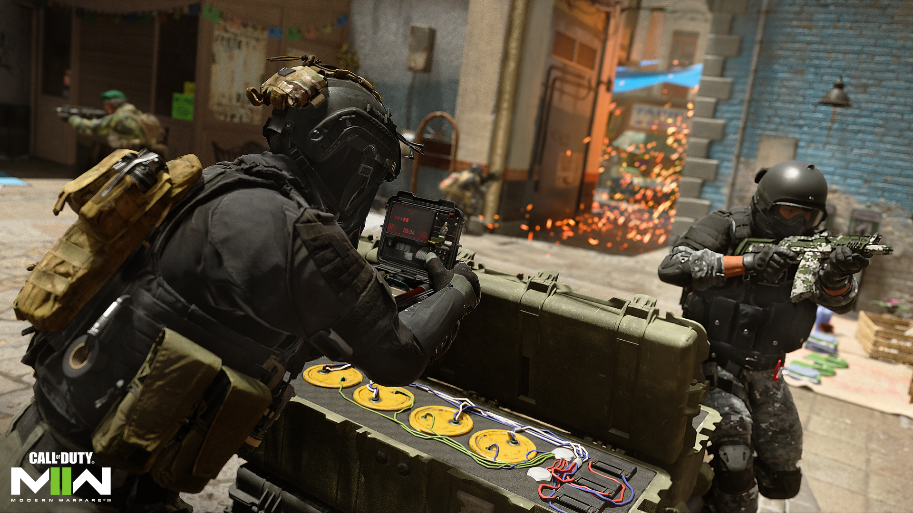
Search & Destroy:
Teams verdedigen en vernietigen om de beurt een doel. Geen respawning. Aanvallers winnen een ronde door alle verdedigers uit te schakelen voor of nadat de bom is geplaatst, of door met succes een bom te plaatsen en deze te laten ontploffen. Verdedigers winnen een ronde door alle aanvallers uit te schakelen voordat de bom wordt geplaatst, door niet toe te staan dat de bom binnen de tijdslimiet van de ronde wordt geplaatst, of door de bom onschadelijk te maken zodra deze is geplaatst. Het eerste team dat zes ronden wint, wint de wedstrijd.
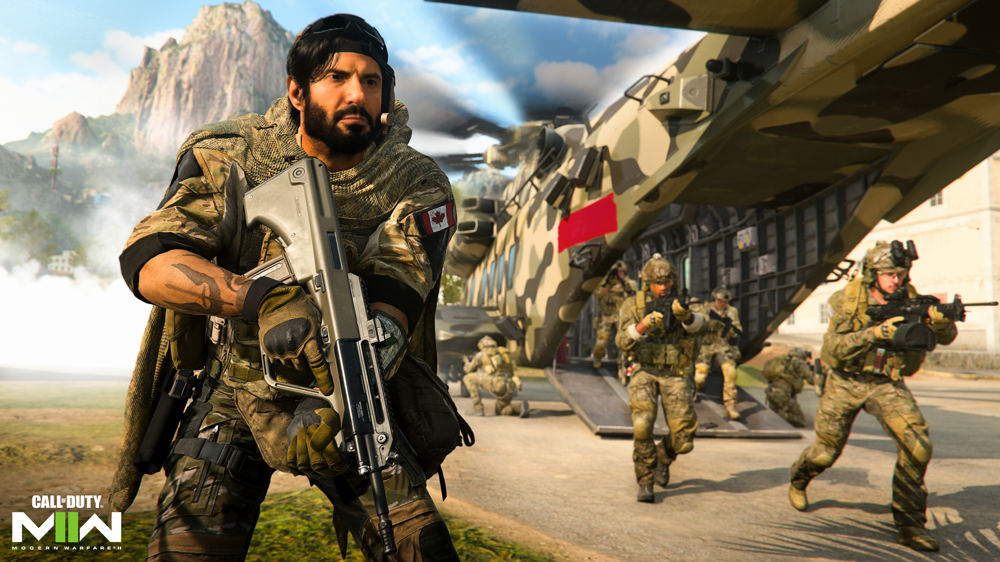
Ground War:
Twee teams, elk bestaande uit 32 spelers, nemen het op tegen een oneven aantal doelen op een grote kaart. Dit is een supergrote versie van Domination, inclusief voertuigen voor epische vechtpartijen. Het eerste team dat 250 punten verdient, wint de wedstrijd.
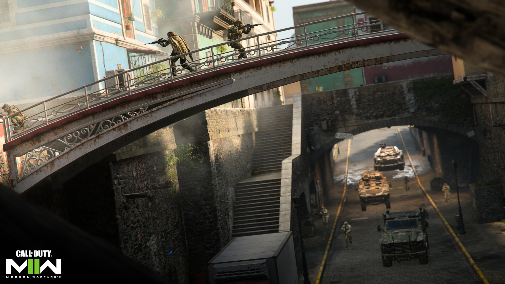
Ground War Invasion:
Een enorm chaotisch gevecht met een mix van spelers en AI die naast elkaar vechten. Gebruik voertuigen, Killstreak-kratten en gepantserde agenten om het voordeel te behalen ten opzichte van je tegenstander. Het team dat als eerste 2.000 punten behaalt, wint de wedstrijd.
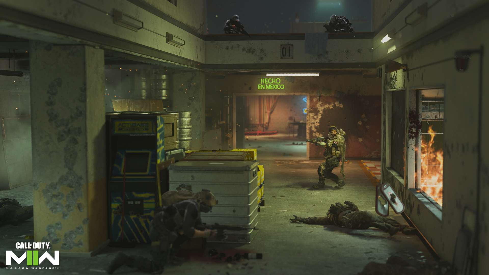